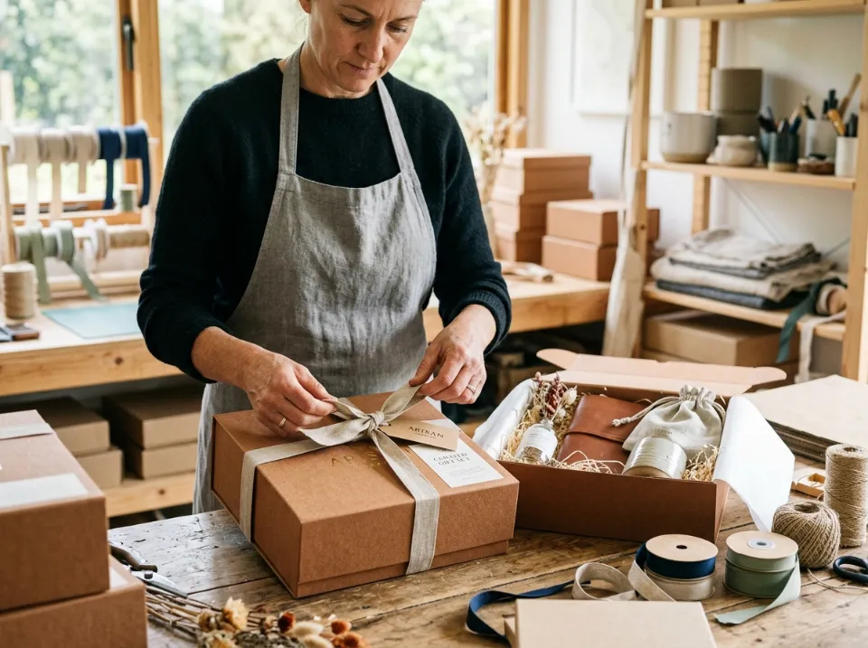

Laser Engraving vs Hotprint Gold Foil: Sentuhan Mewah untuk Corporate Hampers

Kunci keberhasilan corporate gift bernilai tinggi terletak pada tasteful branding — penempatan identitas logo yang presisi, berkarakter, dan tidak terkesan murahan atau mencolok berlebihan. Memahami kecocokan antara material produk dengan teknik personalisasi (laser engraving, hotprint foil emas, blind debossing, atau UV flatbed print) adalah rahasia menghasilkan cinderamata yang dibanggakan penerima.
1. Pentingnya Konsep Tasteful Branding pada Corporate Gift
Banyak perusahaan terjebak dalam kesalahan umum saat memesan bingkisan klien: menempatkan logo perusahaan berukuran raksasa dengan warna neon menyala di tengah-tengah produk. Pendekatan semacam ini sering kali membuat cinderamata terasa seperti baliho iklan berjalan dan enggan dipakai oleh klien VIP di ruang publik.
Di dunia luxury gifting, berlaku prinsip "subtle elegance speaks louder". Personalisasi yang berkelas menggunakan teknik pengolahan material bernilai tinggi seperti ukiran laser monokromatik mikro, foil emas bertekstur, atau embos tenggelam yang menyatu secara alami dengan estetika benda.
2. Karakteristik Laser Engraving: Keabadian pada Logam dan Kayu
Laser engraving menggunakan sinar laser berkonsentrasi tinggi yang dikendalikan oleh komputer untuk mengikis lapisan mikroskopis permukaan material hingga kedalaman beberapa mikron.
- Ketahanan Tanpa Batas: Karena tidak menggunakan lapisan tinta kimia tempel, ukiran laser tidak dapat terhapus, tergores, atau luntur saat dicuci air sabun berkali-kali.
- Akurasi Milimeter: Mampu mereproduksi garis rambut logo yang sangat rumit, tipografi serif halus, hingga kode penomoran serial unik (individual serial number) per penerima.
- Material Ideal: Sangat sempurna untuk tumbler vacuum stainless steel SUS 304, pena logam rollerball, cutlery set kayu mahoni, dan powerbank bodi aluminium anodized.
3. Kemewahan Hotprint Gold & Silver Foil pada Hardbox dan Kertas Fancy
Hotprint (atau hot foil stamping) bekerja dengan memanaskan plat klise tembaga/kuningan bertekanan hidrolik untuk merekatkan lapisan lembaran foil metalik ke permukaan target.
Pantulan kilau emas (gold foil) atau perak (silver foil) memberikan dimensi optik mewah yang tidak dapat ditandingi oleh tinta cetak biasa. Saat kotak bingkisan terkena sorot cahaya lampu ruangan, logo perusahaan Anda akan berpendar dengan anggun. Hotprint adalah standar industri mutlak untuk tutup Executive Rigid Box, sleeve pembungkus, kartu ucapan apresiasi, dan pita satin penutup hampers.

4. Alternatif Blind Debossing dan UV Flatbed Printing
Selain grafir dan foil stamping, terdapat dua teknik populer lain yang kerap dipadukan di studio produksi Hampersku:
- Blind Debossing (Embos Tenggelam): Penekanan plat logam panas pada permukaan kulit sintetis (PU Leather) tanpa menambahkan warna foil. Menghasilkan efek bayangan cekung yang dalam, maskulin, dan sangat nyaman diraba pada buku agenda kerja atau gantungan kunci kulit.
- UV Flatbed Printing: Menggunakan tinta khusus yang dikeringkan instan oleh sinar ultraviolet. Sangat ideal jika logo perusahaan Anda memiliki gradasi spektrum warna kompleks yang wajib tampil persis sesuai standar Pantone CMYK (misalnya pada flashdisk kartu atau tutup botol akrilik).
5. Tabel Panduan Kecocokan Material vs Teknik Branding
Gunakan panduan matriks berikut untuk menentukan teknik terbaik bagi item hampers pilihan Anda:
| Material Produk | Teknik Paling Direkomendasikan | Karakter Visual & Keunggulan |
|---|---|---|
| Stainless Steel / Aluminium (Tumbler, Pena, Cutlery) | Laser Engraving (Grafir) | Monokromatik permanen, tidak mengelupas saat dicuci, presisi sangat tinggi. |
| Rigid Hardbox Fancy Paper (Kemasan Luar Hampers) | Hotprint Gold / Silver Foil | Kilau metalik mewah, kontras tajam di atas warna navy / hitam / emerald. |
| Kulit Sintetis PU Leather (Agenda, Dompet Kartu) | Blind Debossing / Hotprint Foil | Tekstur cekung berwibawa, memberi sensasi sentuhan taktual yang berkelas. |
| Kayu Alami / Bambu (Coaster, Sendok Kayu, Plakat) | Laser Engraving Dalam (Deep Burn) | Menghasilkan warna cokelat karamel organik alami dengan aroma kayu terbakar khas. |
| Poliester / Kanvas Katun (Tote Bag, Lanyard) | Sublimasi Full Color / Sablon Rubber | Warna cerah menyatu dengan serat kain, tidak kaku, dan tahan cuci berkali-kali. |
6. Checklist Verifikasi File Desain Logo Sebelum Cetak
Sebelum tim produksi membuat plat cetak atau mengoperasikan mesin laser, pastikan file grafis Anda telah memenuhi standar teknis berikut:
- ✓ File Berformat Vektor (.AI / .EPS / .CDR / .PDF): Semua huruf teks telah dikonversi menjadi garis lengkung (convert to curves / create outlines).
- ✓ Ketebalan Garis Minimum (Line Weight): Pastikan garis terkecil tidak kurang dari 0.3 pt untuk laser grafir dan 0.5 pt untuk plat klise hotprint emas.
- ✓ Artwork Monokrom Solid: Untuk laser grafir dan hotprint, pisahkan file menjadi warna hitam 100% (K:100%) tanpa bayangan abu-abu (raster gradient).
- ✓ Digital Mockup Approval: Periksa posisi peletakan logo pada simulasi 3D dan konfirmasi ukuran dalam milimeter bersama desainer Hampersku.
7. FAQ — Pertanyaan Umum Teknik Personalisasi Logo
Berikut adalah kompilasi pertanyaan praktis yang sering diajukan klien korporasi seputar teknik pengerjaan branding hampers di studio kami.
Tidak. Laser engraving mengikis permukaan material logam, bambu, atau kayu secara permanen dengan sinar laser berpresisi tinggi. Karena tidak memakai lapisan cat atau stiker kimia tempel, hasil ukiran tidak akan pernah terkelupas atau pudar meski dicuci ratusan kali dengan sabun pencuci piring.
Hotprint foil emas atau perak sangat ideal diaplikasikan pada permukaan kertas seni fancy linen rigid hardbox, pita satin pembungkus, amplop greeting card, sertifikat penghargaan, dan sampul agenda kulit bertekstur halus.
File harus berformat vektor murni seperti Adobe Illustrator (.AI), CorelDraw (.CDR), Encapsulated PostScript (.EPS), atau PDF kurva monokrom (hitam-putih). File raster JPG/PNG dengan resolusi rendah tidak disarankan karena tepi garis logo dapat bergerigi saat diukir mesin.
Sangat bisa dan justru merupakan signature style Hampersku! Kami merekomendasikan hotprint emas pada tutup rigid box luar, grafir laser monokrom pada tumbler stainless, blind deboss bertekstur pada buku agenda kulit, dan cetak foil pada kartu ucapan untuk memberikan pengalaman unboxing yang kaya tekstur.
Kustomisasi hotprint foil emas dapat dimulai dari kuantitas 25 hingga 30 paket. Biaya pembuatan plat klise tembaga/kuningan (hotprint block) bersifat sekali bayar (one-time setup fee) dan plat fisik tersebut dapat disimpan untuk pesanan ulang di masa mendatang tanpa biaya klise tambahan.
Rizky memiliki pengalaman lebih dari 6 tahun dalam dunia kurasi corporate gift, souvenir event, dan luxury packaging di Indonesia. Ia memimpin tim craftsmanship Hampersku dalam memastikan setiap sentuhan laser grafir, hotprint foil emas, dan jahitan kemasan hardbox memenuhi standar presisi estetika tertinggi korporat.